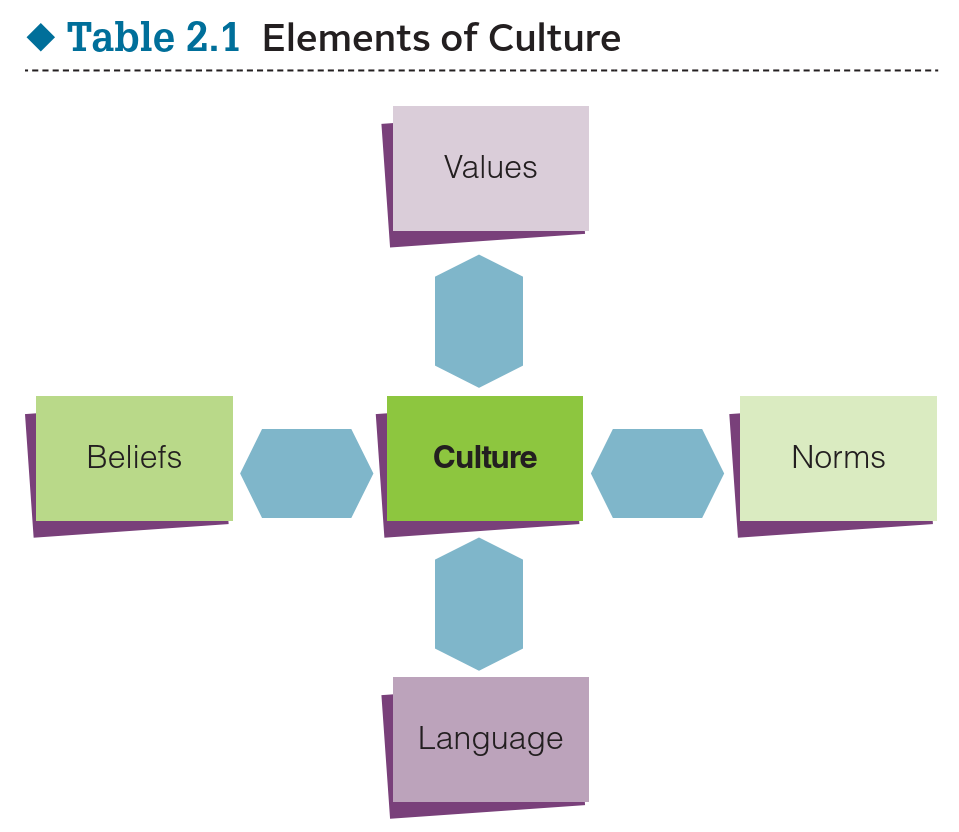

Week 3: Culture
10 September, 2021
Levi Sands

Class Business
- SDS Form: email it to me
- My Essay Quiz - I didn't mark down for uninteresting titles (probably shouldn't have done that)
- Quiz will be on discussion ICON not lecture ICON page
- Definitions of the terms (know them and be able to tell the difference between similar terms)
Culture
complex system of meaning & behavior that defines the way of life for a given group or society

Beliefs, Folkways and Laws
- Beliefs: shared ideas held collectively by people within a given culture about what is true. Shared beliefs are part of what binds people together in society. Beliefs are also the basis for many norms and values of a given culture.
- Beliefs: American dream
- Folkways: the general standards of behavior adhered to by a group. Folkways are the ordinary customs of different group cultures. How you dress is an example of a cultural folkway. Other examples are how people greet each other, decorate their homes, and prepare their food. Folkways are loosely defined and loosely followed.
- Folkways: mate, kisses
- Laws: the written set of guidelines that define right and wrong
- Laws: President must be Catholic
Mores, Norms, Social Sanctions and Taboos
- Mores: strict norms that control moral and ethical behavior. Mores provide strict codes of behavior, such as the injunctions, legal and religious, against killing others and committing adultery.
- Mores: no killing, no defacing a flag
- Norms: the specific cultural expectations for how to behave in a given situation
- Norms: clapping to knock, start time a suggestion, siesta
- Social Sanctions: mechanisms of social control that enforce folkways, norms, and mores.
- Social Sanctions: Hand motions to indicate stupidity, anger during siesta
- Taboos: those behaviors that bring the most serious sanctions.
- Taboos: polygamy
Cesto de Basursa
- How would you classify this?
- Make sure you explain why!
Ethnocentrism & Cultural Relativism
- Ethnocentrism - Judging another culture solely by the values and standards of one's own culture
- Cultural relativism - A principle that an individual person's beliefs and activities should be understood by others in terms of that individual's own culture
Culture (Group Activity)
Do activities like this on your own. When you do you will learn the material far better than just reading chapters and taking notes. It is in the exercising critical think and making connections that your memory will improve!
Themes
reveal.js comes with a few themes built in:
Black (default) -
White -
League -
Sky -
Beige -
Simple
Serif -
Blood -
Night -
Moon -
Solarized
Themes created by Levi Sands
Udub -
USU -
Uiowa -
Gonzaga -
EWU